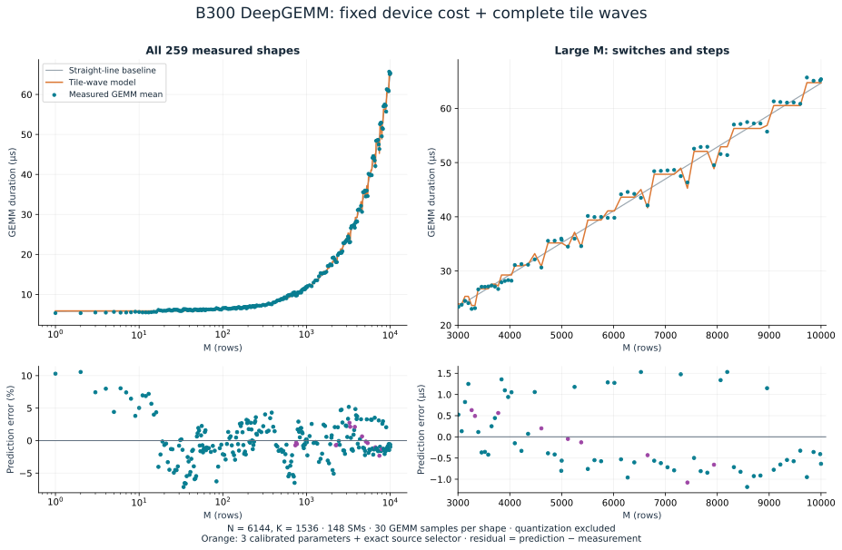
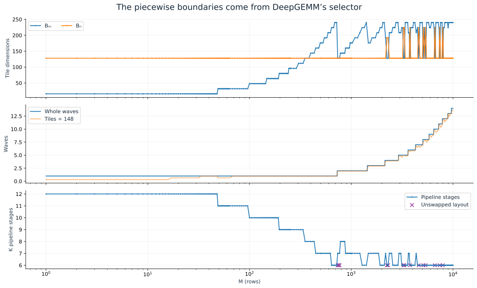
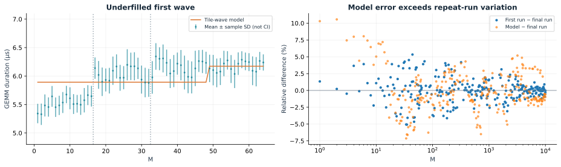

Scope. This models the arithmetic mean of the 30 GEMM kernel durations at each M. It excludes quantization and gaps between kernels. The earlier report’s main curve is the median union of quantization + GEMM and is a different metric. This analysis reuses the saved traces; no new GPU rental was required.

01 · THE PIECEWISE FUNCTION
Predict tile geometry first, then time
Let the pinned DeepGEMM selector choose a tile BM × BN and a layout σ for each M. Define the total logical tile count Q and the longest worker’s number of tiles W:
W(M) = ⌈Q(M) / 148⌉
βσ = 0.01759935 for swapped layout; 0.01609597 for unswapped layout.
“Swapped” refers to DeepGEMM’s internal A/B-swapped kernel orientation; the mathematical output is unchanged. This is a piecewise function: the selector and ceiling functions are discrete. Its boundaries are determined by the kernel source, not chosen to chase individual timing samples. The portable selector reproduces all 259 observed configurations, including pipeline stages and output swizzle, without reading timing values.
For the first region, it has a simple closed form:
BM = 16⌈M / 48⌉, BN = 128, W = 1
T̂(M) = 5.610299 + 0.2815896⌈M / 48⌉ µs
For 721 ≤ M ≤ 768, the unswapped 128 × 128 tile uses two waves: T̂ = 9.730867 µs.
Beyond M = 768, use the same boxed formula and selector. The selected tile can switch back and forth, so forcing one contiguous “small / medium / large” partition would hide real behavior. At M = 736 the trace first shows the new layout; the source boundary is M = 721, which was not sampled.
Inspect a measured shape
The slider selects measured shapes. It does not interpolate measurements between them.
| M | Tile | Waves | Measured µs | Model µs | Error |
|---|---|---|---|---|---|
| 1 | 16 × 128 | 1 | 5.342 | 5.892 | +10.30% |
| 100 | 48 × 128 | 1 | 6.593 | 6.455 | -2.09% |
| 500 | 176 × 128 | 1 | 8.831 | 8.708 | -1.39% |
| 1,000 | 176 × 128 | 2 | 11.786 | 11.805 | +0.17% |
| 2,000 | 224 × 128 | 3 | 17.297 | 17.437 | +0.81% |
| 5,000 | 240 × 128 | 7 | 35.739 | 35.177 | -1.57% |
| 10,000 | 240 × 128 | 14 | 65.380 | 64.744 | -0.97% |
02 · WHY THIS FORM MAKES SENSE
The slowest persistent worker sets completion
The pinned kernel launches 148 persistent CTAs, one per SM. Its scheduler assigns the next tile with a stride of 148. All observed configurations use two-CTA clusters: 74 clusters process two logical output tiles each. The denominator is therefore still 148; changing it to 74 would count the clustering effect twice.
For one output tile, the padded arithmetic work is 2BMBNK. With K = 1536 and a K block of 128, there are 12 K iterations. Each iteration contains four K = 32 UMMA operations. TMA loads, scale handling, Tensor Core work, and stores overlap through a pipeline. A useful starting point is:
Tsteady tile ≈ max(load time, MMA time, store time) + unhidden dependencies.
We cannot identify each pipeline term from this sweep alone. At fixed K, approximate their combined effect by an effective tile service rate Pσ:
The fitted rates correspond to 22.34 TFLOP/s per SM for swapped tiles and 24.43 TFLOP/s per SM for unswapped tiles, or 3.31 / 3.62 PFLOP/s across 148 SMs in this model. These are effective rates that absorb memory, pipeline, scale and epilogue costs. They are not measurements of peak Tensor Core throughput.
Likewise, 5.61 µs is an effective fitted intercept, consistent with device setup, barriers, Tensor Memory allocation, synchronization, and pipeline fill/drain. It is not a separately measured startup constant and it is not CPU launch overhead: the trace interval is the GPU kernel itself.

Why the curve is flat, then nearly linear, with discontinuities
At small M, the fixed cost dominates and there is at most one tile per worker. Increasing useful work inside the same padded tile barely changes the model. As M grows, more work is assigned to each worker: W rises and the dominant trend becomes approximately linear. At a selector boundary, a new tile or layout changes both padding and per-tile service time, making a step or a dip.
The mechanism predicts some large jumps closely: from M = 6656 to 6784 the measured increase is 6.315 µs, versus 6.183 µs predicted. It is not exact: from M = 8832 to 8960, the measured time falls 1.499 µs, while the model predicts a 0.563 µs increase.
Arithmetic efficiency loss is separate from prediction error
ηwave = Q / (148W)
T̂ = T₀ + 2MNK / (148Pσηtileηwave)
Tile efficiency discounts padded arithmetic; wave efficiency discounts unused worker capacity. Their product is only 2.03% at M = 1, versus 96.53% at M = 10,000. These are geometric model quantities, not hardware-counter utilization readings. The fixed term reduces useful throughput further. This explains why “FLOPs ÷ advertised peak” fails especially badly for small M.
03 · FIT AND VALIDATION
Small loss, with an honest baseline
Each shape contributes one 30-sample mean. We fit positive coefficients by minimizing relative squared error:
L = 0.00089922 · root-relative-MSE = 2.999% · MAPE = 2.313% · RMSE = 0.470 µs.
Relative weighting prevents the largest shapes from dominating the fit. MAPE is the mean absolute percentage error; RMSE retains the microsecond scale. Every sampled shape has equal weight, which is not the same as a production request-frequency weighting.
| Model | Fit MAPE | Fit RMSE | Blocked-CV MAPE | Blocked-CV RMSE |
|---|---|---|---|---|
| Straight line · 2 parameters | 2.586% | 0.813 µs | 2.598% | 0.816 µs |
| Tile waves + layout · 3 parameters | 2.313% | 0.470 µs | 2.369% | 0.502 µs |
| Add tail fullness · 4 parameters | 2.104% | 0.502 µs | 2.619% | 0.660 µs |
The baseline is T̂ = 5.753328 + 0.005890M µs, fitted with the same objective. The source-informed model cuts in-sample absolute RMSE by 42.3%, while improving percentage error more modestly. This matters because the baseline’s near-linear trend already explains much of the curve.
Validation protocol: sort the 259 M values, divide them into five contiguous blocks, fit on four blocks, predict the fifth, then combine predictions. No held-out shape contributes to its fold’s fitted coefficients. Interleaved five-fold validation gives 2.327% MAPE / 0.476 µs RMSE. Fitting coefficients on the first sweep and predicting the final sweep gives 2.311% / 0.474 µs.
These are exploratory internal checks. Both curves informed the investigation, both runs used the same shapes and GPU session, and the model family was chosen after inspecting data. These scores are not an untouched prospective test. They support this fixed-N,K setting; they do not establish accuracy for a different N, K, GPU, compiler, clock policy, or cold-cache workload.
A fourth coefficient models final-wave fullness, f = Q/148 − (W − 1), by adding δf. It improves fitted MAPE to 2.104%, but makes blocked validation and absolute RMSE worse. We retain the three-parameter model. This alternative also moves the intercept from 5.61 to 5.18 µs, demonstrating why the intercept should not be interpreted as an independently measured physical constant.
04 · EXPLAINING THE RESIDUAL
Where the missing time comes from
The largest absolute fitted error is 1.531 µs at M = 8192. The largest percentage error is 10.56% at M = 2, where the model predicts 5.892 µs and the measured mean is 5.329 µs. The 95th percentile absolute percentage error is 6.45%.

- Partial waves have different contention. For M = 1–48, the model uses the same 16 × 128 tile and W = 1. But the number of active logical tiles grows 48 → 96 → 144. Measured time changes even though the longest worker has one padded tile. The constant-wave-rate model misses this. The source verifies the tile count; attributing all of the change specifically to memory contention remains a hypothesis.
- One rate per layout averages over different pipelines. Tile width changes UMMA shape, shared-memory footprint, number of K pipeline stages, and output-store work. BM = 224 configurations tend to run faster than the model predicts; BM = 240 configurations often run slower. Those systematic differences are not explained by sample noise alone. The source has different epilogues for swapped and unswapped paths, but timing alone does not isolate which instruction or stall causes the rate difference.
- Cache behavior is missing. FP8 weights occupy 9,437,184 bytes, and the same resident tensors are reused without an L2 flush. Output and activation footprints grow with M. A model that assumes every operand is always fetched from HBM would be inappropriate here; a model that assumes perfect L2 hits would also be unsupported. Cache capacity alone cannot establish a transition.
- Execution varies between samples and runs. The median within-shape sample SD is 0.249 µs. Across the two full sweeps, mean absolute relative disagreement is 1.320%, median disagreement is 0.823%, and RMSE is 0.199 µs. These are observed repeatability measures, not a proven irreducible noise floor. Clocks were not locked.
What this sweep cannot distinguish
At fixed N and K, both useful FLOPs, 2MNK, and output bytes, 2MN, grow linearly with M. A good linear or tile-work fit therefore does not prove that the kernel is Tensor Core bound. Memory traffic, epilogue throughput, and compute throughput can produce similar slopes. The effective rates are deliberately aggregate parameters.
To distinguish those causes in a future experiment, vary K and N independently, force selected tile configurations around a boundary, compare warm versus deliberately cold cache, and collect Nsight Compute counters for tensor activity, TMA/L2/HBM traffic and stalls. Repeating across sessions with controlled clocks would separate device variation from configuration effects. None of those missing measurements is invented here.
05 · AUDIT AND REPRODUCE
Every number is reproducible offline
Predictions and features · CSV · Fit and cross-validation results · JSON · Both runs’ per-kernel measurements · JSON · Source and data bundle · ZIP
python3 source/model.py --root . python3 source/build_report.py
The bundle includes the source-derived selector, model fitting, plots, report builder, derivation, measurements and license. Requires Python, NumPy, SciPy and Matplotlib. Source input hashes are recorded in measurements.json; published file hashes are in manifest.json. No GPU or network access is needed to reproduce the calculations.
The original experiment used DeepGEMM commit b4296ed, CUDA 13.0, and PyTorch 2.11.0+cu130 on one B300 with 148 SMs. See the measurement report for setup and the distinction from the original GB300 production experiment.
- Pinned DeepGEMM heuristic: candidate shapes, shared-memory stages, wave count, tie-breaking and launch geometry.
- Persistent scheduler: stride of 148 workers and padded normal-GEMM tiles.
- GEMM kernel: K blocks, two-CTA clusters, Tensor Memory and epilogues; SM/TMEM ownership and output paths.
- NVIDIA GEMM background: general tile and wave quantization principles.
- NVIDIA Blackwell tuning guide: asynchronous Tensor Core operations and Tensor Memory.
Verified source facts establish the geometry and execution structure. The three timing coefficients and their error estimates come from the measured data. The claims about which low-level bottlenecks cause remaining error are qualified hypotheses.